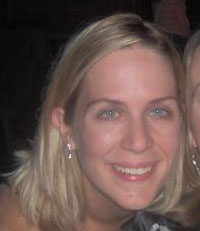
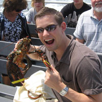
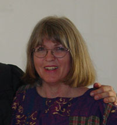
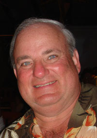
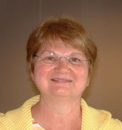
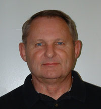

The Wedding Party and Parents
Maid of Honor

Danielle Briggs
Best Man

Matthew Wagoner
Hometown of Maquoketa, IA
I first met Marc in College at the University of Northern Iowa where we became fast friends in the Dormatory. We lived together in the "Bat House" and had many adventures during the 2 years we were Founding fathers of the first chapter of Pi Kappa Phi Fraternity. Although the fraternity never officially chartered we had a lot of great memories and have still been great friends ever since.
Matt has been living and working in Chicago, IL for the past 3 years. Matt has been married for just over a year to his wife Ashley. Matt works as a Regional Sales Manager for Secure Integrations, a digital video surveillance company.
Mother of the Bride

Ann Ray
Father of the Bride

Denny Pasternak
Denny grew up in NW Indiana just outside of Chicago. He moved to southern Indiana to attend Rose Hulman Institute of Technology where he earned a Bachelor’s degree in Computer Science. He lived in Kokomo and Indianapolis, Indiana and Omaha, Nebraska while working in the data processing industry in various capacities. In 2000 he moved to Phoenix, Arizona and started his own specialty travel business in 2002.
Mother of the Groom

Leorita Hauschildt
Leorita was born in Dysart, Iowa, where she lived growing up. She and Leo met in high school and will soon celebrate their 40th wedding anniversary. In addition to recordkeeping for Leo’s business, she is Leadership Assistant at Van Meter Industrial in Cedar Rapids. The highlight of each week is spending time with Dawson and Daniel on week-ends, whenever possible; they enjoy board games, baking, and doing puzzles.
Father of the Groom

Leo Hauschildt
Leo was born in Marshalltown, Iowa, and was raised on a dairy farm in the Dysart, Iowa area. After high school he graduated from Universal Trade School in Omaha, Nebraska. He then enlisted in the Army and served during the Viet Nam War in Thailand as a communications engineer. He and Leorita were high school sweethearts and are proud parents of Marc, Craig, and Dana and proud grandparents of Dawson and Daniel. Leo is starting his 27th year as owner of Leo’s Heating and Air Conditioning, HVAC contractor in Cedar Rapids. He enjoys playing tuba.